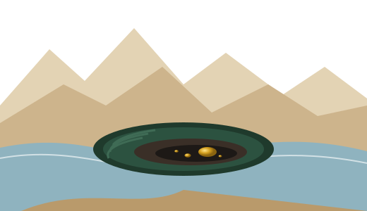

BONUS 1
Public Panning Areas by State
28 states · official links
BONUS 2
Check a Mining Claim in 10 Minutes
Step-by-step with BLM MLRS
Josie's 7-Trip Field Workbook
First Flake
A Field Workbook for Beginner Gold Prospectors

From your first creek to your first flake of gold, in seven trips.
BONUS 3
Is It Gold? Pocket ID Card
Gold vs. mica vs. pyrite
BONUS 4
The Trip 1 Paydirt Shortcut
Practice with real gold at home